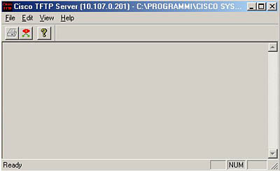

La configurazione di un router Cisco può avvenire in diversi modi:
Se si sta effettuando la prima configurazione del router, bisognerà usare una sessione Hyper Terminal attraverso cavo console, diversamente con Telnet o simili, attraverso il protocollo TCP/IP; indipendentemente dal tipo di collegamento al router (cavo console o ethernet) la procedura di configurazione è identica.
Analizziamo, ora, una classica configurazione del router 827 attraverso la CLI e i comandi dell'IOS per un collegamento PPPoA.
Accendiamo
il router e aspettiamo che lo stesso prepari l'IOS
e presenti il proprio prompt di comandi.
Il router impiega circa 90 secondi per il caricamento del sistema e altri 15-30
per ottenere la sincronizzazione dell'ADSL.
Iniziamo la configurazione passando in modalità privilegiata:
Router>enable
Se
il router non è mai stato configurato in precedenza, non sarà
necessario inserire nessuna password di accesso.
A questo punto il prompt si presenterà in modalità privilegiata
cambiando da > a #
Router#
Entriamo ora in modalità "configurazione generale" per configurare le porte. Digitiamo:
Router#conf t
e apparirà il prompt in modalità configurazione :
Router(config)#
Selezioniamo ora l’interfaccia Ethernet 0 (che è anche l'unica interfaccia Ethernet presente sul router) digitando:
Router(config)#interface ethernet 0
e apparirà il prompt in modalità "configurazione interfaccia":
Router(config -if)#
A
questo punto dobbiamo assegnare un IP
privato al router (es: 192.168.0.254).
E' caldamente consigliato un indirizzamento di classe C, essendo il prodotto
riservato ad ambienti SOHO limitati
ad un massimo di 20 utenti.
La maschera di sottorete di default sarà, ovviamente, 255.255.255.0,
ma si potrebbe optare per maschere non convenzionali nel caso si adottasse una
segmentazione della classe C.
Il comando da digitare sarà:
Router(config -if)#ip address 192.168.0.254 255.255.255.0
Per rendere operativa l’interfaccia è necessario digitare il comando:
Router(config -if)#no shutdown
che
la renderà attiva e disponibile alla LAN.
Prima di passare ai successivi step sarà necessario uscire dalla configurazione
dell’interfaccia Ethernet digitando
Router(config -if)#exit
e ottenendo un nuovo prompt in modalità "configurazione generale":
Router(config)#
Passiamo
ora alla configurazione del Dialer in versione PPPoA
(PPP over ATM). Un dialer consiste in un meccanismo che permette di associare
più interfacce virtuali (i dialer appunto) alla stessa interfaccia fisica.
La configurazione standard per una connessione a Internet prevede, appunto,
il settaggio "Dialer + ATM". Entriamo dunque sull’interfaccia
di configurazione del Dialer digitando:
Router(config)#interface dialer 0
e otterremo il prompt in modalità "configurazione interfaccia":
Router(config -if)#
possimo descriverne la funzione con il comando:
Router(config)#description connessione a Internet
nel caso di IP Pubblico dinamico (assegnato dal provider) dovremo digitare il comando:
Router(config -if)#ip address negotiated
nel caso di IP statico indicheremo, invece, il primo IP della subnet di IP pubblici assegnatici con la relativa maschera di sottorete.
Router(config -if)#ip address ip_address subnet_mask
settiamo, quindi, l’incapsulamento PPP, digitando:
Router(config -if)#encapsulation ppp
e, affinchè l’interfaccia possa essere messa in contatto con la WAN che fa parte della rete pubblica (provider), digiteremo il comando relativo al NAT (Network Address Translation):
Router(config -if)#ip nat outside
E' necessario, infine, specificare quanti dialer pool utilizzeremo. In questo caso uno solo, quello relativo alla connessione a Internet.
Router(config -if)#dialer pool 1
definiamo ora i codici di accesso richiesti dal provider (ISP) con due diverse tipologie di autenticazione (in base all'algoritmo utilizzato) che ci permette di utilizzare il protocollo ppp, CHAP e PAP:
Router (config-if)#ppp chap hostname xxxxxxx
e la per la password, digitiamo:
Router (config-if)#ppp chap password yyyyyy
Nel caso si utilizzi una tipologia di autenticazione PAP il comando sarà il seguente:
Router (config-if)#ppp pap sent-username xxxxxx password yyyyyy
Prima di passare ai successivi step sarà necessario uscire dalla configurazione dell’interfaccia Dialer digitando:
Router(config -if)#exit
Passando alla configurazione dell’interfaccia ATM, è necessario posizionarsi in modalità di configurazione della stessa con il comando:
Router(config)#interface ATM 0
ottenendo un nuovo prompt in modalità "configurazione interfaccia":
Router(config -if)#
Per configurare correttamente il circuito PVC (Permanent Virtual Connection) dovremo avere a disposizione la coppia VPI/VCI che serve ad indirizzare il flusso ATM. Digitiamo (di solito):
Router(config -if)#pvc 8/35
E' l'identificativo del VPI/VCI ovvero i campi che servono per l'instradamento.Il percorso di ogni singola cella.
La
rete ATM, infatti, viene suddivisa
in canali che verranno utilizzati dal passaggio delle celle. Il valore VCI,
infatti, è il parametro che identifica il canale utilizzato nell’ATM
per il passaggio dei dati Internet. E, inoltre, necessario individuare il percorso
che la cella deve effettuare nella rete dei server ATM,
specificndo questo valore con il parametro VPI.
Esso, infatti, indica il percorso che la cella stessa compierà all’interno
della rete al fine di occupare sempre lo stesso canale (VCI).
Ovviamente i valori vengono forniti dal provider. Quasi tutti i provider italiani
utilizzano questa coppia VPI/VCI
sul lato client, ma potrebbe essere anche un altro identificativo, tipo 1/33.
In questo caso il prompt cambierà automaticamente in modalità
ATM virtual connection:
Router (config-atm-vc)#
I
pacchetti di dati che viaggiano con protocollo PPP,
nel caso dell’ADSL ,
dovranno passare per una rete ATM
e verranno incapsulati nella cella ATM,
ottenendo in questo modo il pacchetto di PPPoA,
ossia PPP over ATM.
Per configurare questo tipo di incapsulamento dati, è necessario usare
VC Mux come encapsulation. Il riferimento è la RFC
2364 - ATM Adaptation Layer 5 (aaal5). Digitiamo quindi:
Router (config-atm-vc)#encapsulation aal5mux ppp dialer
Ora preoccupiamoci di specificare il dialer pool member. Questo comando associa all' interfaccia fisica uno o piu' profili DIALER (definiti sopra)
Router (config-atm-vc)#dialer pool-member 1
ora preoccupiamoci di abilitare anche l'interfaccia ATM verso la WAN con il solito comando:
Router (config-atm-vc)#no shutdown
Prima di passare ai successivi step sarà necessario uscire dalla configurazione dell’interfaccia ATM digitando:
Router (config-atm-vc)#exit
E' necessario, dunque, configuare il NAT per la nostra rete locale LAN, abilitando dinamicamente la traslazione degli indirizzi specificati nell’interfaccia del dialer (quelli che riceveremo con la negoziazione), digitando:
Router (config)#ip nat inside source list 1 interface dialer 0 overload
In questo modo applichiamo il NAT ad ogni pacchetto che interessa la access-list 1 assegnando come source address l'indirizzo pubblico (negoziato) dell'interfaccia Dialer 0
quindi, per impostare l’IP route dell’interfaccia di dialer come default Gateway, digitiamo:
Router (config)#ip route 0.0.0.0 0.0.0.0 dialer 0
nel caso di IP statico indicheremo, invece, il primo IP della subnet di IP pubblici assegnatici con la wildcard mask relativa:
Router(config -if)#ip address ip_address wildcard mask
Per definire una ACCESS LIST che permetta agli indirizzi la traslazione, digitate:
Router (config)#access-list 1 permit 192.168.0.254 0.0.0.255
ora rientriamo con due piccoli passi nell'interfaccia Ethernet per abilitare il Nat:
Router (config)#interface ethernet 0
e al nuovo prompt::
Router (config-if)#
Digitiamo il commando relativo all'abilitazione del NAT sull’interfaccia::
Router (config-if)#ip nat inside
e abiliatiamo la stessa digitando:
Router (config-if)#no shutdown
Infine, per uscire dalla configurazione, digitate:
Router (config-if)#exit
E' ora necesario salvare la configurazione sulla NVRAM con il comando:
Router#copy running-config startup-config
o più semplicemente:
Router#wr mem
Qualora si voglia effettuare l'upload di una configuarzione attraverso rete con l'ausilio di un server TFTP, bisognerà usare il comando:
Router# copy tftp running-config
carica le informazioni di configurazione da un server TFTP. Il router visualizza una serie di domande interattive relative al nome e/o indirizzo di rete del server TFTP e il nome del file sorgente.

Logicamente, una volta eseguita questa procedura bisogna sempre lanciare il comando copy running-config startup-config per salvare la configurazione nella NVRAM.
Una volta effettuata la configurazione in uno dei modi elencati, è possibile verificare che il collegamento sia attivo, usando il comando:
Router# show int atm 0
Esso produrrà un output simile al seguente:
ATM0
is up, line protocol is up
Hardware is PQUICC_SAR (with Alcatel ADSL Module)
MTU 1500 bytes, sub MTU 1500, BW 640 Kbit, DLY 80 usec,
reliability 255/255, txload 1/255, rxload 9/255
Encapsulation ATM, loopback not set
Keepalive not supported
Encapsulation(s): AAL5, PVC mode
11 maximum active VCs, 51 current VCCs
VC idle disconnect time: 300 seconds
Last input never, output 00:00:02, output hang never
Last clearing of "show interface" counters never
Input queue: 0/75/0/0 (size/max/drops/flushes); Total output drops: 4
Queueing strategy: Per VC Queueing
5 minute input rate 23000 bits/sec, 0 packets/sec
5 minute output rate 0 bits/sec, 0 packets/sec
316012 packets input, 201550082 bytes, 0 no buffer
Received 0 broadcasts, 0 runts, 0 giants, 0 throttles
0 input errors, 4029 CRC, 0 frame, 0 overrun, 0 ignored, 0 abort
286301 packets output, 24674099 bytes, 0 underruns
0 output errors, 0 collisions, 1 interface resets
0 output buffer failures, 0 output buffers swapped out
La prima riga mostra lo stato della connessione, in questo caso è up. Per scopi diagnostici dal prompt di configurazione del router possiamo anche eseguire un ping verso un host qualsiasi. Per esempio sul server di Networkingitalia:
Router>ping
212.210.123.146
Type escape sequence to abort.
Sending 5, 100-byte ICMP Echos to 212.210.123.146, timeout is 2 seconds:
!!!!!
Success rate is 100 percent (5/5), round-trip min/avg/max = 104/112/140 m
La configurazione finale sarà più o meno simile alla seguente:
Router#show conf
Current
configuration:
!
Using 1824 out of 131072 bytes
!
version 12.2
no service pad
service timestamps debug uptime
service timestamps log uptime
no service password-encryption
!
hostname Cisco827
!
enable secret 5 XXXXXXXX
enable password XXXXXXXX
!
ip subnet-zero
!
!
!
interface Ethernet0
ip address 192.168.0.254 255.255.255.0
ip nat inside
no ip route-cache
!
interface ATM0
no ip address
no ip route-cache
no atm ilmi-keepalive
pvc 8/35
encapsulation aal5mux ppp dialer
dialer pool-member 1
!
bundle-enable
dsl operating-mode auto
!
interface Dialer0
ip address negotiated
ip nat outside
encapsulation ppp
dialer pool 1
dialer-group 1
ppp chap hostname XXXXXX
ppp chap password XXXXXX
ppp pap sent-username XXXXXXXX password 7 XXXXXXXX
!
ip nat inside source list 1 interface Dialer0 overload
ip classless
ip route 0.0.0.0 0.0.0.0 Dialer0
no ip http server
!
access-list 1 permit 192.168.0.0 0.0.0.255
!
line con 0
stopbits 1
line vty 0 4
password XXXXXXXX
login
!
scheduler max-task-time 5000
end